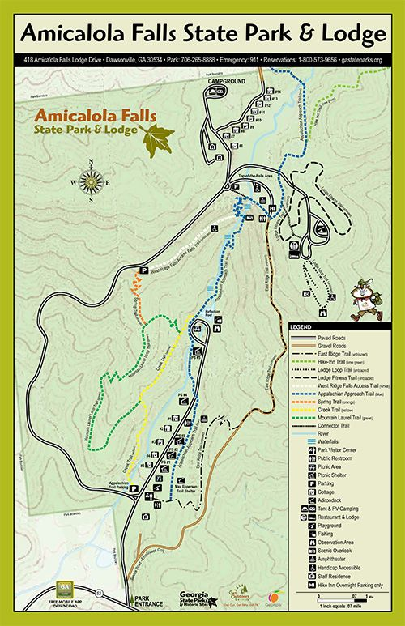

- Cloudland Canyon
- Fort Mountain
- Redtop Mountain
- Amicalola Falls
- Vogel State Park
- Tallulah Gorge
Legend
Amicalola Falls State Park
About the trail:
It’s easy to see why Amicalola Falls State Park is one of the most popular Georgia State Parks with 829 acres of beautiful North Georgia mountain wilderness in the heart of the Chattahoochee National Forest. Amicalola, a Cherokee Indian word meaning “tumbling waters,” is an appropriate name for the 729-foot falls, the highest cascading waterfall east of the Mississippi River. An eight-mile approach trail leads from the park to Springer Mountain, the southern end of the 2,150-mile Appalachian Trail. Many other beautiful and diverse trails wind through the park and activities are abundant at the Amicalola Falls Visitors Center. Frequent park visitors can save money with a $50 Annual ParkPass available at the Lodge or Visitor’s Center. Passes are good for one year from purchase date.